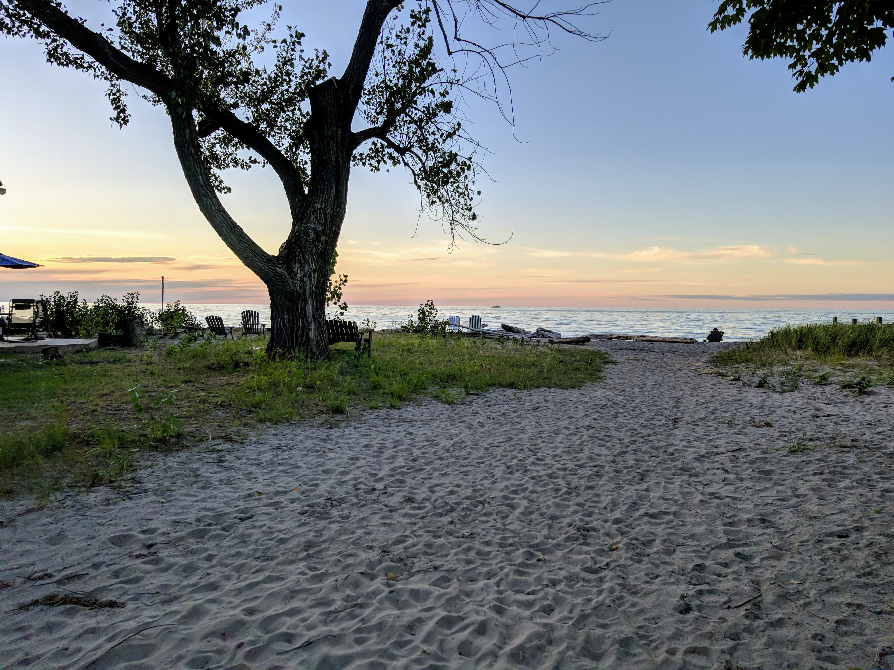
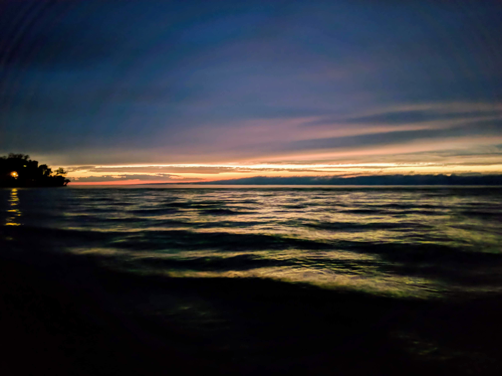
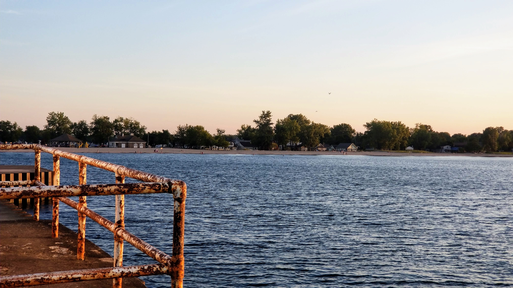
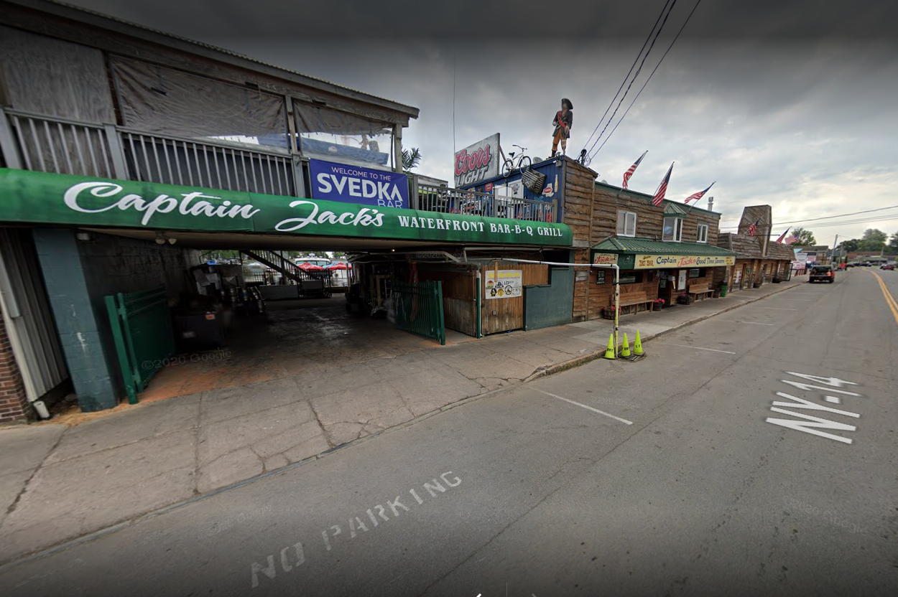
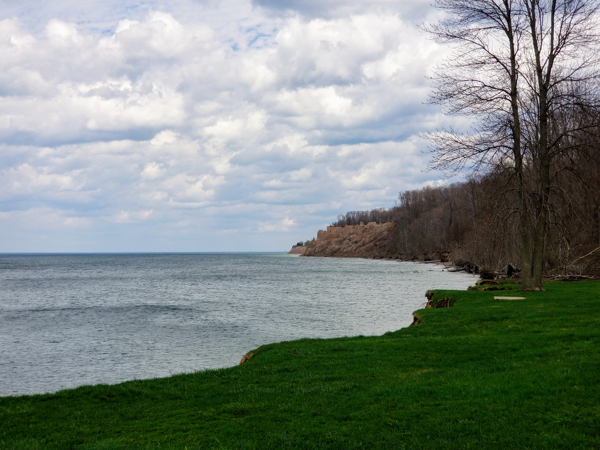
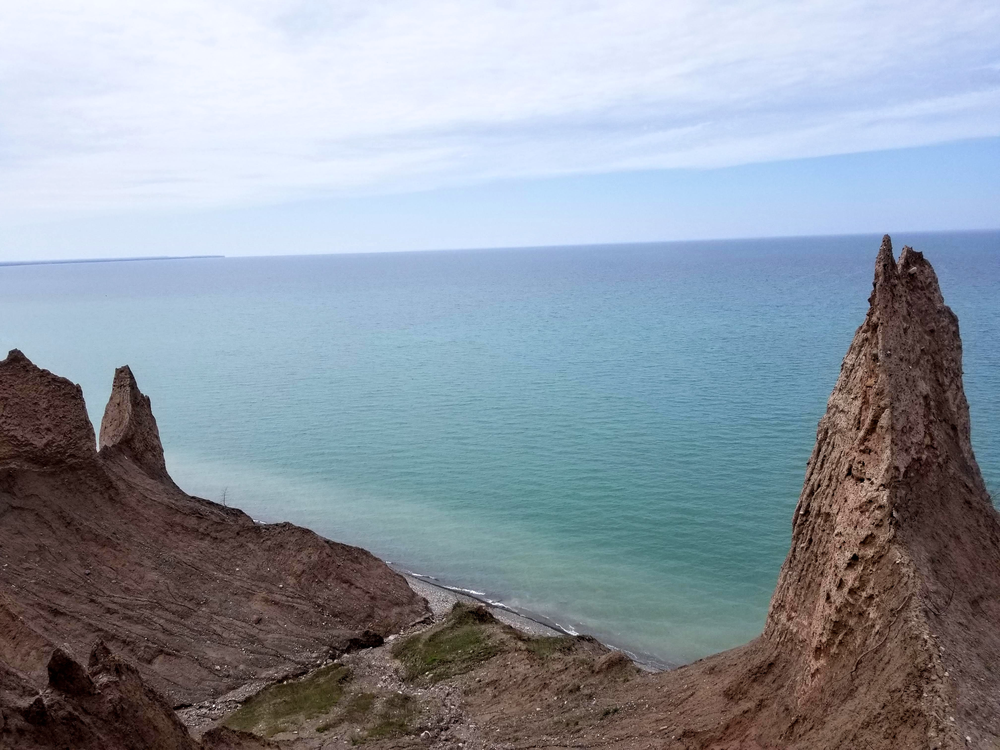
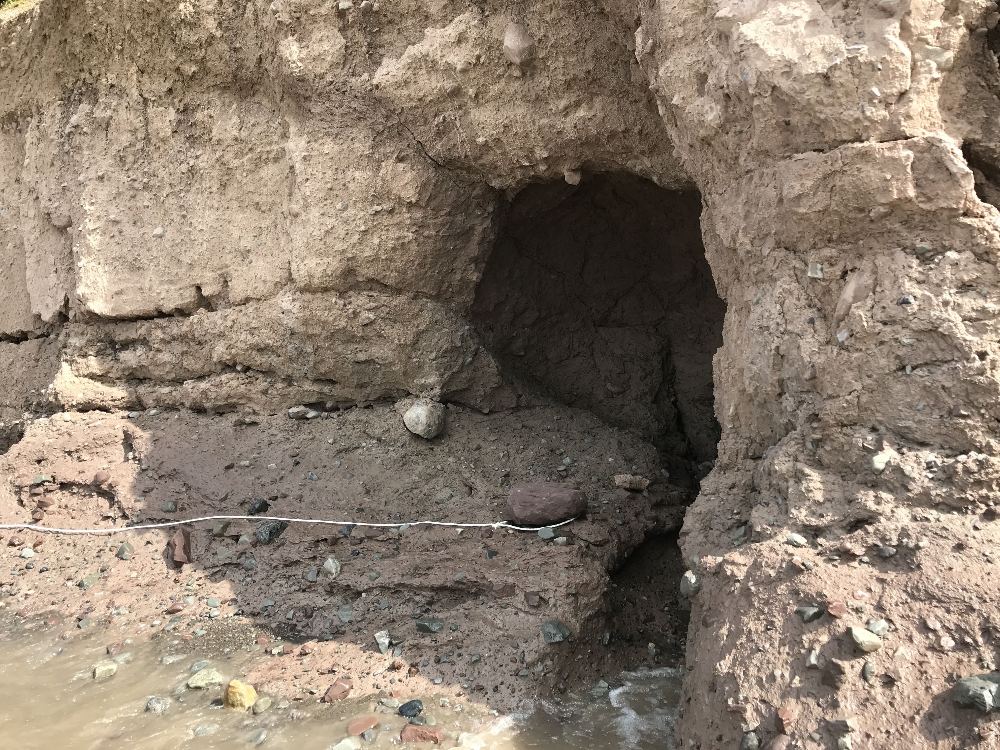

We are Debbie and Bob Colucci and we purchased this lodge from the Able Family in October of 2020. At this point, we are fully running the lodge and are taking new visitors!
A little bit about us is that we are from Upstate New York and have been coming to Sodus Point for years now. We love to hang-out on our boat in the bay with our friends and go to the many restaurants located here. We even got married at Captain Jack's across the street! There are lots of reasons to love it here and we are happy to have a place for people to stay and fall in love with it just like we did.
Pictured above and below this is the Sodus Point Beach and Historic Lighthouse. It's the perfect spot to walk and or view the sunset. With a long stretching beach and plenty of space to relax, you'll definitely have a great time! In the summer you can take a swim, relax by the water or get a good tan in. In the winter you can walk along the beach and see the cool and unique ways that the water has frozen over that year. With so much to offer this is a must-see when coming to the point.
  Along Greig St. (Main St Sodus Point) you'll find many places to eat. Whether it's a quick bite, some ice cream, or a proper sit-down meal, Sodus Point has it all! In addition, all of these places are within walking distance of the lodge so there is no need for Uber or to figure out rides.
One of our personal favorites no matter what time of year is Captain Jack's Goodtime Tavern. With places to eat both inside and out and a wide variety of foods to pick from, you're guaranteed to not be disappointed going here. During the summer they have an upper deck with an excellent view of the sunset on the water with a live band playing. Their wings are amazing and on your birthday you can get some for free!
Chimney Bluffs State Park is a short drive away and offers an easy and beautiful hike for any summer day. We recommend the upper hike so that you can see the rock formations and how they are worn down by rain and runoff. You can also get a similar, easier view by walking along the water and also seeing the miniature caves created by Ontario Lake. Chimney Bluffs is the perfect weekend excuse to get some exercise, some fresh air, and see a scenic view.
  